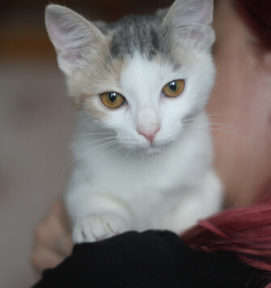

Срочно необходимо забрать собаку (мальчик) на передержку или насовсем. Послезавтра его ждет усыпление. С кормом и
доставкой поможем. В данный момент находится в вольера САХа.
Контактный телефон + 37529 58930557
Спасите жизнь хвостику.
СПАСИ ЖИЗНЬ
Благотворительное общественное объединение защиты животных
Наша цель: помощь бездомным животным. Также мы поддерживаем хвостиков, которые оказались в пункте отлова и временного содержания в Гродно.
У животных, находящихся в пункте отлова и временного содержания бродячих животных, есть всего несколько дней до усыпления...
Тут большие добрые сердца помогают жить маленьким сердечкам
Ежедневно в пункт временного содержания, путём отлова, попадают безнадзорные собаки и коты. По закону, у животных находящихся в САХе есть всего лишь несколько дней, чтобы найти прежнего или обрести нового хозяина. В противном случае невостребованных животных ждёт УСЫПЛЕНИЕ! Здесь вы сможете найти своего как потерявшегося, так и нового верного друга!
Если нет возможности забрать хвостика, вы можете помочь нам финансово или другой материальной помощью. Еще нам всегда нужны добрые и отзывчивые люди - волонтеры, без вас очень трудно!
Как помочь?
-

Дать хвостику дом или взять на передержку
-

Перечислить деньги в фонд помощи
-

Привезти корм, лекарства или другие вещи
-

Доставить животным еду или отвезти в больницу
-

Выгуливать, кормить, мыть или лечить хвостиков

Дом и любовь для хвостика
Самая большая помощь - это спасти жизнь животному, забрать домой, или помочь хвостику с поиском дома. У наших подопечных очень мало времени. Рассказывайте друзья и и знакомым о наших хвостиках, возможно кому-то нужен будет именно такой друг.
Передержка
Когда животных ждет скорое усыпление, очень важно найти ему дом. Но пока дом и новые или старые хозяева разыскиваются, хвостику нужно где-то жить. Вы можете забрать к себе домой животных на время. Волонтеры, в свою очередь, обязательно помогут с поиском нового дома.
Наши подопечные
-

Моник
Мальчик, 7 месяцев
К поводку приучен. Не агрессивный. В еде не привередничает. С другими животными не конфликтует. Привит. Очень плачет и хочет на ручки. Отдается только в добрые руки и под паспорт.
Забрать домойЗабрать на передержку -

Герда
Девочка, 7 месяцев
Она не знает, что такое – царапаться и кусаться, она не знает, что такое нападать на других животных.
Забрать домойЗабрать на передержку -

Лунатик
Мальчик, 7 месяцев
К поводку приучен. Не агрессивный. В еде не привередничает. С другими животными не конфликтует. Привит. Очень плачет и хочет на ручки. Отдается только в добрые руки и под паспорт.
Забрать домойЗабрать на передержку -

Саки
Мальчик, 7 месяцев
Веселый и очень игривый, ему так нужны ваша любовь и ласка.У него потрясающая густая шерсть в полосочку, «серьезные» желтые глаза и длиннющие белые усы.
Забрать домойЗабрать на передержку -

Моника
Девочка, 4 месяца
Девочке 4 месяца жила в ужасных условиях, бывшая хозяйка могла исчезнуть на двое суток закрыв её одну в комнате без еды, ей нельзя там больше оставаться. Мила очень ласковая, забавная, в еде не привередлива.
Забрать домойЗабрать на передержку -

Андреантино
Мальчик, 7 месяцев
Веселый и очень игривый, ему так нужны ваша любовь и ласка.У него потрясающая густая шерсть в полосочку, «серьезные» желтые глаза и длиннющие белые усы.
Забрать домойЗабрать на передержку

Финансовая поддержка
Такая помощь необходима для оплаты стерилизации, прививок, лечения больных животных, покупка корма и других жизненно необходимых вещей.
Расчетный счет в Банке
- БООЗЖ "СПАСИ ЖИЗНЬ"
- УНП: 590375680
- Текущий (расчетный) счет в BYN:
- BY13ALFA30152555460010270000
- ЗАО 'Альфа-Банк'
- БИК: ALFABY2X
Коробочки в городе
Наши коробочки для пожертвований в г. Гродно:
- Зоомаркет «Зообазар», ул. Комарова, 26а;
- Учебный корпус ГГАУ, ул. Волковича, 1;
- Парикмахерская «ПРИМАДОННА», ул. Гоголя, 11;
- Зоомаркет «Зообазар» ул. Пушкина, 31а;
- Гипермаркет «Евроопт», ул. Тимирязева, 8;
- Гипермаркет «Евроопт», ул. Янки Купалы, 82А;
- Фитнес-центр «АДРЕНАЛИН», ул. Подольная, д.37.

Корма
Можно помочь с покупкой и доставкой еды для хвостатых:
- Быстроразваривающиеся крупы: дроблёная гречка, овсянка, сечка, овсяные/гречневые хлопья, не требующие варки;
- Сухие и влажные корма для собак и котов (кроме Рекс и Petboom),
- Фарш для собак, "БОБИКИ" и др.
Лекарства
Нам необходимы препараты: цефтриаксон (флакон по 0,5 г); новокаин (раствор для инъекций); гискан; гамавит; катозал; антитокс фоспренил; энтеросгель (паста); препараты от глистов, блох, клещей, для заживления ран.
Другие нужные вещи
Для содержания животных всегда необходимы:
- Ошейники, поводки, намордники;
- Опилки и солома в любом количестве;
- Посуда для животных и для приготовления еды (миски, кастрюли, ножи, черпаки и др.)
- Теплые вещи, лежаки для утепления и уюта животных;
- Будки.

Автопомощь
Важной помощью будет транспортировка. Необходимо отвозить животных в ветеринарную клинику в сопровождении нашего волонтера или привозить еду. Если у вас есть автомобиль, немного свободного времени и доброе сердце - будем вам рады.

Волонтерство
Катастрофически не хватает добрых людей, которые готовы поделиться своим временем и окружить заботой животных.
Много опыта не нужно, все расскажем и поможем! Если Вы располагаете несколькими часами свободного времени, проведите
его с пользой! Главное условие - это Ваше совершеннолетие и любовь к животным!
Часто животным не хватает обычных прогулок и игры, они сидят в клетках и грустят.
Новости

Найдены бедомные щенки по улице Горького д.56.
Сегодня будут перевезены в вольеры САХа. Если у вас есть возможность
взять на передержку или пристроить малышей - будем вам очень благодарны.
О нас
Мы - благотворительное общественное объединение защиты животных «СПАСИ ЖИЗНЬ». Цель нашей деятельности: помощь бездомным животным, оказавшимся в Пункте отлова и временного содержания безнадзорных животных г.Гродно.
Контакты
Если Вы хотите приютить одного из этих четвероногих или оказать какую-либо помощь, звоните волонтёрам:
- +375 (33) 6237879, Лена
- +375 (29) 7877791, Ольга
- +375 (29) 5837015, Рита
Адрес САХа
РБ, г. Гродно, ул.Дзержинского, д.104
Связаться с нами можно написав в соц. сетях.


Спасибо за помощь